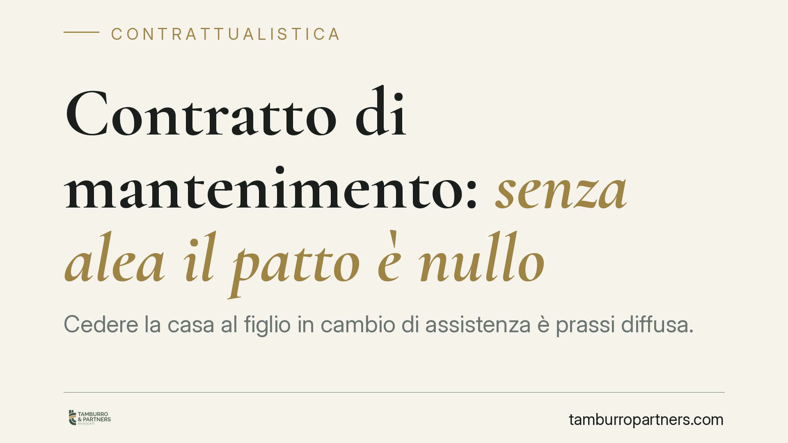

Contratto di mantenimento: senza alea il patto è nullo
Cedere la casa al figlio in cambio di assistenza è prassi diffusa. Ma se, al momento del rogito, il disponente è già gravemente malato e le cure valgono molto meno dei beni trasferiti, il contratto rischia di crollare per mancanza di alea. La giurisprudenza chiede ai giudici un confronto economico concreto tra ciò che si dà e ciò che si riceve.

Il caso tipo
Un genitore anziano trasferisce al figlio la proprietà della casa, spesso riservandosi l'usufrutto, in cambio dell'impegno a prestargli assistenza e cure per il resto della vita. Alla morte del disponente, un altro erede contesta l'operazione: le cure effettivamente rese valgono molto meno del bene ceduto, e il patto sarebbe servito solo a sottrarre l'immobile alla successione.
È lo schema classico del cosiddetto vitalizio assistenziale o contratto di mantenimento: una figura che merita precisione tecnica, perché viene spesso confusa con istituti vicini.
Inquadramento normativo
Il contratto di mantenimento è un contratto atipico: non ha una disciplina specifica nel Codice civile e trova fondamento nell'autonomia privata riconosciuta dall'art. 1322 c.c. Va tenuto distinto dalla rendita vitalizia, che è invece tipica e regolata dagli artt. 1872-1881 c.c.: lì la prestazione del vitaliziante è una somma di denaro o una quantità di beni fungibili, mentre nel mantenimento l'obbligazione ha per oggetto prestazioni di assistenza personale (cura, vitto, alloggio, compagnia), per loro natura infungibili.
L'elemento che accomuna le due figure è l'alea, cioè l'incertezza. La validità del contratto di mantenimento dipende dalla presenza di un rischio reciproco: nessuna delle parti può sapere in anticipo quanto durerà la vita del beneficiario e, quindi, quale sarà l'entità complessiva delle cure dovute. È questa incertezza a giustificare lo scambio tra un bene di valore determinato e prestazioni di valore indeterminato.
Quando l'alea manca fin dall'origine, l'equilibrio salta. È il caso in cui, al momento della stipula, il disponente versa in condizioni di salute tali da rendere prevedibile un decesso a breve: in quella situazione le cure sono quantificabili con ragionevole certezza e lo scambio perde il suo carattere aleatorio. La conseguenza, secondo l'orientamento giurisprudenziale, è la nullità per difetto di causa, perché viene meno l'elemento aleatorio che è ragion d'essere del contratto.
È importante non confondere due piani distinti:
- il difetto genetico di alea (la morte era prevedibile fin dall'inizio) conduce alla nullità per difetto di causa;
- la mera sproporzione tra le prestazioni, in presenza di un'alea comunque sussistente, attiene semmai al diverso rimedio della rescissione per lesione (art. 1448 c.c.), soggetto a presupposti e termini propri.
La valutazione richiesta ai giudici di merito è quindi economica e comparativa: occorre mettere a confronto il valore dei beni ceduti e il valore prevedibile delle prestazioni assistenziali.
Il peso dell'usufrutto trattenuto
Un aspetto spesso sottovalutato riguarda l'usufrutto che il disponente si riserva. Trattenendo il diritto di abitare e godere l'immobile per tutta la vita, il genitore trasferisce al figlio la sola nuda proprietà. Il valore effettivamente ceduto è dunque inferiore al valore pieno del bene.
Questo dato va inserito nel confronto economico: ai fini della verifica dell'alea e della proporzione si considera il valore della nuda proprietà, non quello della piena proprietà. È un elemento che può incidere in modo decisivo sull'esito del giudizio.
Implicazioni pratiche
Le conseguenze cambiano a seconda della posizione.
Per il vitaliziante (il figlio che riceve il bene): l'impugnazione del contratto può travolgere l'acquisto. Se il patto è dichiarato nullo, l'immobile rientra nell'asse ereditario e torna a essere oggetto di divisione tra tutti gli eredi.
Per gli altri eredi e legittimari: il contratto di mantenimento non è uno strumento neutro rispetto alla successione. Oltre al tema dell'alea, resta aperta la possibilità di contestare l'operazione sotto il profilo della lesione della quota di legittima, qualora il trasferimento abbia di fatto svuotato il patrimonio del disponente a danno degli aventi diritto.
È opportuno non considerare il contratto di mantenimento come una scorciatoia per anticipare o sostituire la successione: la sua tenuta dipende da presupposti sostanziali verificabili a posteriori.
Cosa fare in concreto
- Documentate lo stato di salute del disponente al momento della stipula: una relazione medica aggiornata riduce il rischio di contestazioni sull'alea.
- Fate quantificare preventivamente il valore dei beni (tenendo conto dell'eventuale usufrutto) e il valore prevedibile delle prestazioni assistenziali.
- Conservate la prova delle cure effettivamente prestate: ricevute, turni, spese, testimonianze. In giudizio l'onere di dimostrare l'esecuzione grava sul vitaliziante.
- Verificate l'impatto successorio sulle quote di legittima prima di procedere, per evitare future azioni di riduzione.
- Richiedete una consulenza preliminare se il disponente presenta patologie rilevanti: in presenza di quadri clinici critici il contratto va valutato con particolare attenzione.
Sul piano probatorio, in un eventuale contenzioso assumono rilievo le cartelle cliniche, la consulenza tecnica d'ufficio (CTU) sul valore dei beni e delle cure, e la documentazione dell'assistenza concretamente resa.
Disclaimer
Contributo informativo a cura di Tamburro & Partners - Avv. Giuseppe Tamburro. Non costituisce parere legale.
Ogni contratto ha il suo equilibrio.
Se vuoi una revisione delle clausole o una redazione su misura, scrivi allo studio. Ti rispondiamo entro un giorno lavorativo.